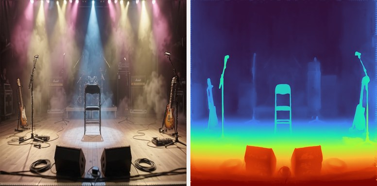
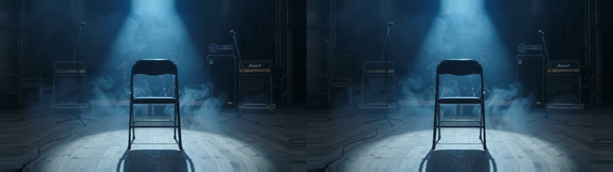
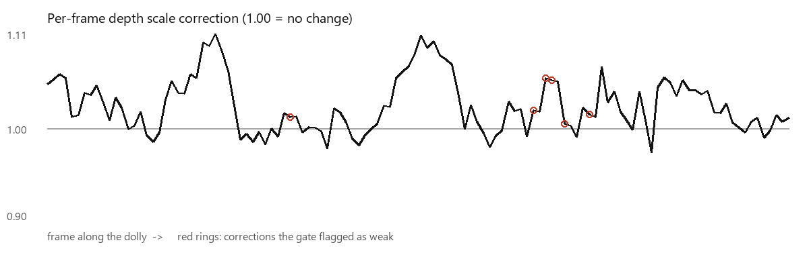

Overview
IMET, the Immersive Media Entertainment Theatre, presents In*Human: volumetric holographic performers step into the visitor's own home, where an AI vision model on the headset finds a real seat for them, and tell how their senses and their hard work made them masters of their craft, with comedic interruptions from Humobox, a cube made of human senses.
Story Structure
The piece is organised around the senses. The opening works as onboarding into a near-future humanity: a voice-over title sequence gives way to a handheld "shorts" feed of art films (a sculptor, a perfumer, a chef, a conductor and a painter) swiped like a phone held in front of you. Rain then closes in on a glass capsule around the visitor, moss grows over it, and Humobox lands on a real table to talk.
The Ear chapter, built around musician Luke Azariah, is the vertical slice I am currently pitching. It runs end to end: the intro above, then Luke's interview seated in a real chair in the visitor's room, then his performance as the room opens into a concert stage. The Eye, Nose, Mouth and Skin chapters are designed and waiting for funding.
Intro · onboarding
Ear chapter · Luke Azariah
Built: the vertical slice above. In development: Eye, Nose, Mouth and Skin chapters.
Where It Started: Herald Examiner MR
In*Human grows directly out of Herald Examiner MR (2024), my first mixed reality prototype driven by vision AI models. There, on-device object detection turned a laptop into a 1926 typewriter and a book into a newspaper, and the key lesson was that content pinned to a jittering bounding box breaks presence, while content anchored once to a stable surface holds. In*Human takes that lesson and scales it into a full narrative: vision models no longer decorate objects, they decide where the story can happen. A detector finds a real chair the performer can sit in, depth raycasts find a real table for Humobox to land on, and the passthrough camera feed becomes the material the shaders bend.
How It Works
Everything runs standalone on Meta Quest 3. The headset senses the room, on-device systems interpret it, and the characters and effects perform inside it.
Sense
Understand
Perform
The Room as a Lens: Shaders Adaptive to the Camera Feed
The first prototype layered effects over passthrough, and it felt like a sticker on glass. The piece was rebuilt around the Quest passthrough camera: the camera image, its pose and its intrinsics are fed into the shaders every frame, and an equirectangular panorama of the room is painted from the feed as the visitor looks around. Raindrops refract the actual camera image behind them and reflect the panorama in the true reflection direction; drops merge, grow and run, leaving trails that clear the condensation. The moss is a physically based carpet with parallax depth and translucency, lit by the same room panorama. The result is an effect that cannot exist without the room it runs in.
Two Menus: Visitor and Developer
The piece opens on one of two menus. Visitors meet Humobox floating in the dark, with the five senses laid out beneath it: pinch Humobox to begin the full experience, or pinch a sense to open its chapter. Behind it sits a developer menu, a plain list of every chapter and test: the pilot sequence from any step, each intro effect on its own, Luke's stage jump and seat finder, and raw PLY and stereo playback. Holding both thumbs up, or pinching and holding the title, switches between the two, so the same build serves an audience and a working session. Playback is never stopped by a pinch or a glance; a held thumbs up ends the chapter and brings the menu back.
Luke Azariah: a Volumetric Performer in Your Chair
When the Ear chapter begins, the seat finder runs YOLOv9 on passthrough frames, filtered to chairs, sofas and benches, and confirms every candidate with depth: the seat must face the visitor, sit at a plausible height above the measured floor and agree across several detections before Luke is placed on it, scaled life size and aligned by the chair's backrest. If no seat is found, Luke brings his own.
The Stage Jump
After the interview Luke picks up his guitar and the living room gives way to a concert stage. The camera starts on an empty chair in a spotlight, pulls back over the crowd and returns to the stage edge, where Luke is placed on that same chair and performs.
Getting him there took three layers. The dolly is a generated flat video, reconstructed frame by frame with depth, stabilised over time and rendered as a stereo pair, so each eye sees its own view. When the camera comes to rest, the piece cuts to a 3D stage rebuilt in Blender from the depth of that same frame: floor, props and back wall are modelled where the depth says they are, and the lighting is baked into their textures. Real volumetric fog is raymarched through the stage beams in Unity, so the haze moves around the performer instead of being painted behind him. The chair's position is tracked through every frame of the reconstruction, and Luke's splat sequence is anchored to it at life size, facing the visitor.


The PLY Sequence Pipeline
Luke exists as thousands of Gaussian splat frames: every frame of a mono video recorded with an iPhone 12 Pro is reconstructed into its own 3D scene and saved as a PLY file. A raw sequence like that is far too heavy for a standalone headset, so I built a pipeline that turns it into something Quest 3 can stream.
Before reconstruction, Luke is separated from the background with the SAM2 segmentation model. The first test failed in an instructive way: the prompt asked for a guitar player, and SAM2 delivered exactly that, the player without the guitar, so the rendered Luke strummed thin air. In the second version the guitar was prompted together with the player, and both came through intact. Rendering the whole sequence from video to PLY files took about 1 hour 20 minutes.
As an alternative to the PLY sequence I also tested top-bottom stereo video of Luke. It was much lighter, but the results were poor: a stereo video reads as a screen floating in the room rather than a person in it, and without real 3D geometry the seat found by the vision model could not physically hold him. The splat sequence won on both immersion and placement.

Convert. Each frame is decoded independently; nothing is interpolated or invented between frames. Position, rotation and scale are folded into a single 3D covariance, colour and opacity are packed into four bytes, and every splat becomes one compact, GPU-aligned half-precision record.
Budget. When a frame holds more splats than the headset can draw, splats are ranked by how much they contribute on screen rather than by how much volume they fill, so faces and hands keep their detail while invisible interior splats are dropped.
Stream. Frames are loaded ahead of the playhead in the direction of play, sorted back to front on the GPU every frame, and double-buffered so rendering never reads a frame that is still being written; an early version flickered with cyan and magenta panels until those races were removed. Playback is clocked by the audio, not the frame rate, so speech and guitar stay in sync.
Place. The converter also measures where the performer stands or sits in every frame (feet, centre and typical height), which the player uses to ground him on the detected chair and keep him there as the capture moves.
Temporal stability. The concert stage is reconstructed the same way from flat video, and that exposes the weakness of per-frame reconstruction: a model that sees one image at a time has no memory, so the depth of a perfectly still scene breathes and rescales from frame to frame. I treat this as a registration problem. Each frame's depth is aligned to the frame before it with a small scale-and-offset correction, and a gate refuses corrections that look unreliable (fast motion, occlusion, a cut), holding the last good one instead of reacting to a single bad frame. Corrections are applied along each pixel's own viewing ray, so the picture the camera saw never changes; only its depth becomes consistent. For the headset, the stabilised stage is turned into depth-mapped stereo with a comfort limit on how far apart the two eyes are pushed.
Humobox FaceCap: Puppeteering a Cube of Senses
To give Humobox a believable performance without a motion-capture stage, I built a webcam and microphone puppeteering tool for Blender. Every take is my own face and voice driving a character that has no human face at all.
Because Humobox is not a human face, the mapping is the design work. Raised brows flap and lift the ear. A nose scrunch, measured from facial proportions, wrinkles the nose, while nostril flare and a sniff heard by the microphone widen the nostrils. A fast head flick spins the whole cube a quarter turn. The tongue, which face models cannot see, is played live from a held key, and an offline phoneme pass adds tongue-tip peeks on "th" and "l" sounds after each take. Every channel lands on a custom property of the rig and simple drivers turn it into motion, so the face can be re-rigged without recapturing.
Key Innovation
- Virtual actors anchored into the visitor's own home by an on-device vision model
- PBR shaders that refract, reflect and light themselves from the live camera feed
- A streamed 4D Gaussian splat performer on standalone hardware
- Temporally stable depth from per-frame 3D reconstruction
- Webcam-and-voice puppeteering for a non-human character
Technical Highlights
Unity 6, URP and OpenXR on standalone Meta Quest 3, with a PC VR build of the same piece. Passthrough Camera API feed in custom HLSL shaders: procedural rain with merging drops and runner trails, live room panorama, condensation fog and a PBR moss carpet. YOLOv9 seat detection with Unity Inference Engine on camera frames, plus environment depth raycasts for tables, floors and walls. Hand occlusion meshes built from XR Hands joints. Streamed Gaussian splat playback with GPU sorting. A Python tracker and Blender add-on for face and voice capture, with FBX export of baked takes. Profiled against the headset's 72 Hz frame budget with on-device session logs.
AI-Assisted Workflow
Herald Examiner MR ended with a goal: a fully automated iteration loop between AI and engine. In*Human is that loop. Claude Code worked directly inside Unity and Blender through MCP servers and headless scripts, compiled shaders offline before every build, ported shaders to Python to preview them without the engine, built and installed APKs, and read the headset's own logs to diagnose what happened on device. My role moved from writing code to directing: setting the artistic intent, testing on the headset, and deciding what stays.
Key finding: the agent can close the loop on the headset itself. From the command line, Claude Code builds the app and installs it on Meta Quest 3 automatically, tests the software by remoting into the headset and reading its camera feed, and built its own tool for streaming the headset view, with audio, straight to the computer.
Reflection
I had a lot of fun building this project and learning to work with AI as a co-creator. The vertical slice is built on many hypotheses planted in the idea of the experience, and now I wonder how the story would feel different depending on where it is watched: a studio apartment, a flat or a house. Which emotions would it trigger in other people, and would they be the same as mine? I intend to continue my research into agentic holograms that communicate with, and act upon, the physical spaces we live in.